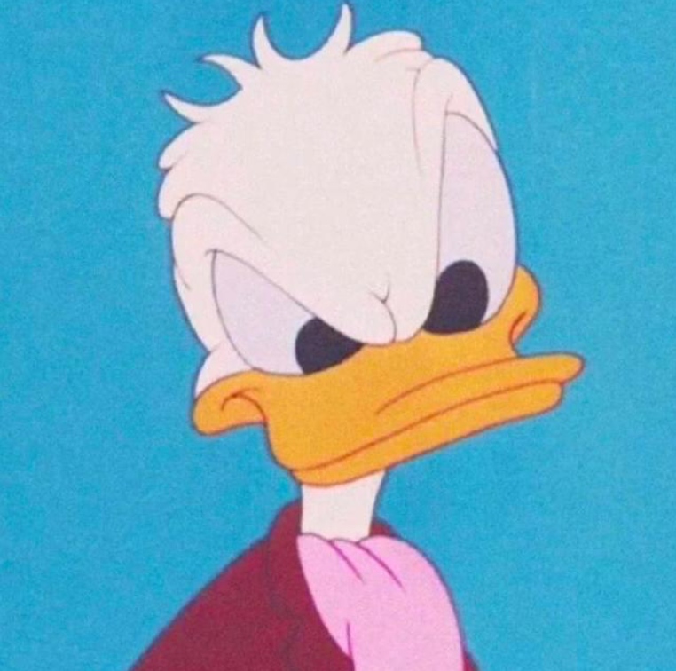

Hi there! I’m Ong Zhi Han, a 19 year old INFJ digital media designer from Penang, Malaysia. I proudly hold a Diploma of Digital Media from Dasein Academy of Art.
I like to break the rules when they were profound in my mind, so my key styles would be bold, modern, and experimental. While I love minimalist and brutalist designs, I always add a little spice to make my works stand out.
